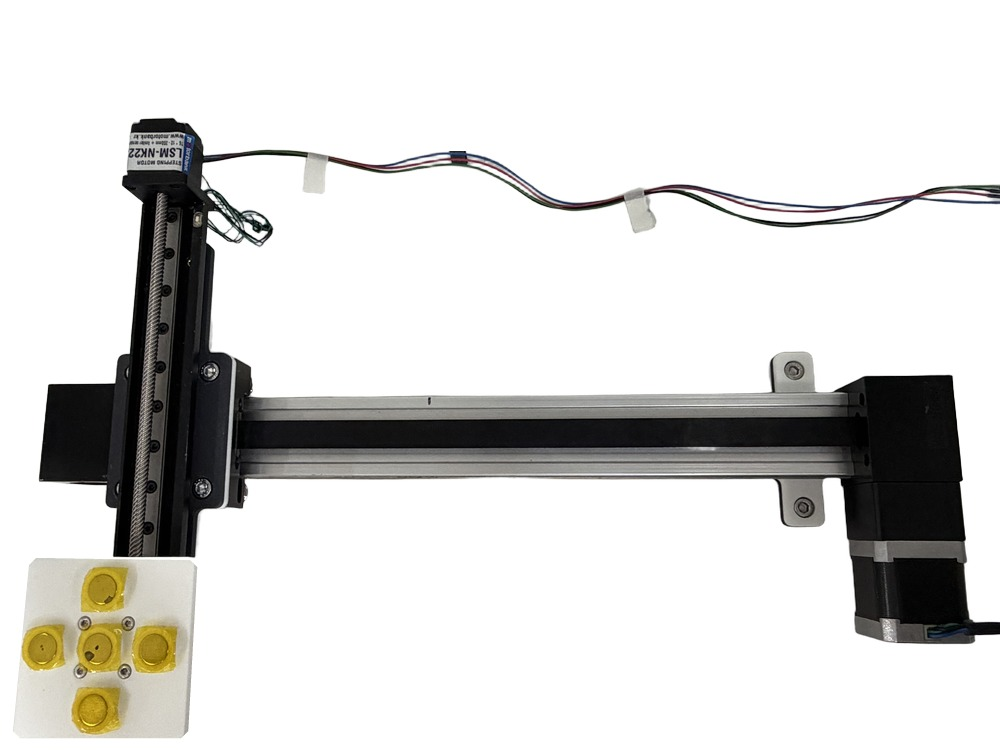
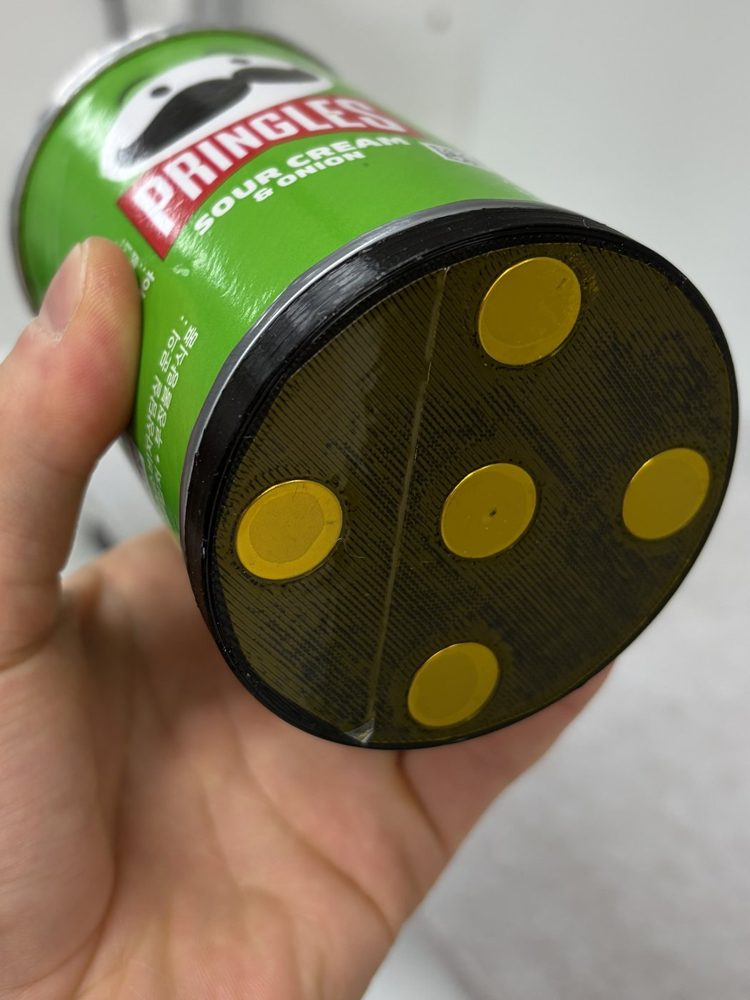

The setup and the test
 Middle ToF
Middle ToF

Teleoperation
Teleoperation
Autonomous
Vision-language-action (VLA) models rely on camera images, so they fail in the dark. I built seven proximity sensors into a robot hand and fed three of them into π0.5, a pretrained VLA model; the same model without them is the camera-only policy.
At first, the policy ignored the sensors: the fingers’ starting joint angles differed in every demonstration, so it likely recognized each demonstration by those angles and replayed its motion. I therefore removed the joint angles from its input and pre-trained and froze its sensor encoder to locate the Pringles can. Without these two changes, the same model approached the Pringles can at 0 of 16 positions in a later, unblinded test. A control trained the same way but with every ToF reading marked invalid approached it at only 1 of 16, so the difference comes from the ToF readings.
My part: I designed the sensors’ circuit boards and built them into the hand, built the dark shelf with its gantry and a leader-follower teleoperation system, recorded the demonstrations, trained the policies and ran every robot test.
The 16-position test was pre-registered and blinded, with the policies running in random order under hidden code names. Whether the hand approached the Pringles can, coming down within 40 mm of it, was computed from the robot’s joint logs by a fixed rule. In September, I discarded all earlier comparisons after finding a software delay in the arm-position input.
Limits: one object and one training seed, 16 trials per policy, no trials in normal light, test positions within the area the demonstrations covered, and grasps scored by an operator who could tell the policies apart.